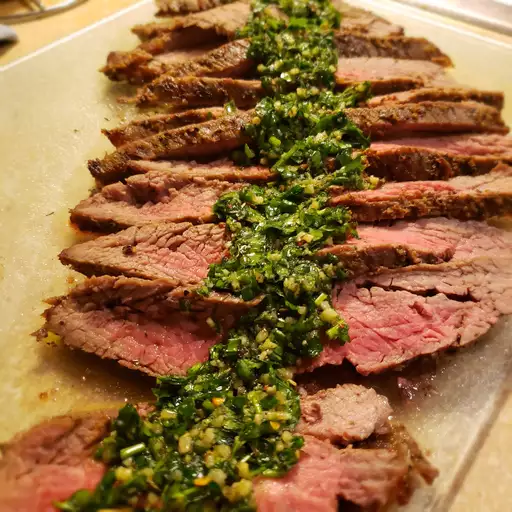

Steak

Marinated Flank Steak
A great flank steak marinade like this one is important if you want a
tender, juicy, flavorful steak. Make sure you marinate your flank steak
for at least 2 hours for best results or longer if you have time. This
wonderful quick and easy recipe also works great when the steak is sliced
and used for fajitas.
Ingredients
- Vegetable oil
- Low-sodium soy sauce
- Red wine vinegar
- Fresh lemon juice
- Worcestershire sauce
- Dijon mustard
- Garlic
- Ground black pepper
- Steak
Steps
- Gather ingredients
- Whisk together
- Pour marinade over steak
- Preheat grill
- Remove steak from marinade
- Cook steak
- Let steak rest for 5 minutes
- Serve hot